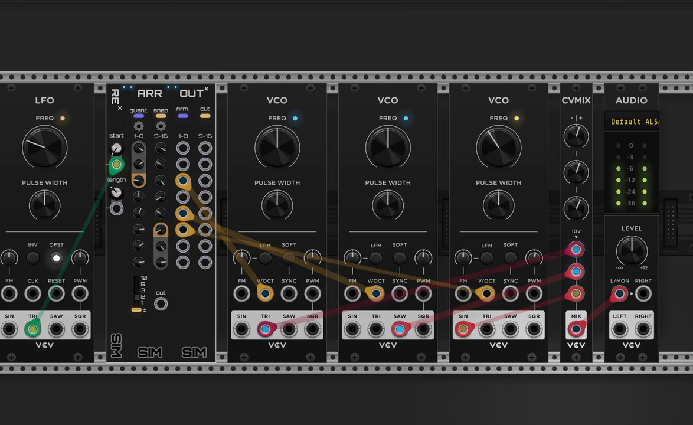

Arr¶


Summary¶
Arr is a sixteen-knob polyphonic control-voltage source. Each knob sets one output channel. Arr can quantize those voltages to a scale or a fraction grid and shows knob values as voltages, note names, or fractions to match. Expanders can select ranges, combine Arr's channels with other voltages, and route or remove individual channels.
Panel overview¶


Voltage knobs¶
Sixteen knobs set the sixteen channels of the polyphonic output. When a quantization mode is active, the output receives quantized voltages. The numbered voltage-range switch sets their magnitude, and ± switches between unipolar and bipolar ranges.
Knob value displays follow the active mode: raw voltages; note names using ♯ or ♭ for the selected
scale and root; or fraction forms such as 3 * 1/4.
Quantization modes¶
Click the top display to select the quantization mode:
| Mode | Behavior |
|---|---|
Off |
Knobs and the output pass voltages without quantization. |
Scale |
Quantizes to the selected musical scale and root note. |
Fraction |
Quantizes voltages to an absolute step of numerator / denominator volts. |
Ranged fraction |
Quantizes voltages to a step of numerator / denominator of the magnitude, in either polarity: 1/4 of 5 V is 1.25 V in 0–5 V and in ±5 V. |
Click the two displays below it to set the mode's details: type and root in Scale, num and
den in the fraction modes.
Expander interactions¶
Rex voltage-sequence transform¶
Rex gives Arr a movable window onto its polyphonic values.
start selects the first channel, and length sets how many channels it contains. The selection wraps around the channels of Arr’s polyphonic output.
Inx voltage operations¶
Inx lets you replace, add to, or insert Arr's output channels.
Each input on Inx corresponds to a channel of Arr’s polyphonic output. Its mode switch has three settings:
Overwrite: values from connected inputs replace the corresponding Arr voltages. Only the first channel of a polyphonic input is used.Add: values from connected inputs are added to the corresponding channels of Arr’s output. Only the first channel of a polyphonic input is used.Insert: all values from a connected polyphonic input on Inx are inserted before the corresponding Arr output channel. If insertion would produce more than 16 channels, Arr truncates the result to 16 channels.
Arr quantizes the result, so adding a CV transposes within the selected scale.
Outx breakouts and Cut¶
Outx routes Arr's channels to separate destinations. It can route individual values and normalled ranges, or remove those values from the final polyphonic output.
Outx has two independent mode switches. nrm. selects how connected ports receive channels. cut selects whether those channels remain on Arr's output.
Individual: each connected port outputs the Arr value corresponding to its channel.Normalled: each connected port outputs the range after the preceding connected port through its own channel, including unconnected channels in that range.Copy: all channels remain on Arr's output.Cut: channels sent to connected Outx ports are removed from Arr's output. With nrm. set toIndividual, the remaining channels close up. With nrm. set toNormalled, only channels after the last connected port remain.
Context menu¶
Snap to quantized values makes the knobs step between quantized values while you turn them.
Control rate trades control response for CPU; see Control rate.
Patch ideas¶
Two chords and a bass from a moving window over a quantized pitch table¶
Use Arr as a quantized pitch table. Connect an LFO to Rex's Start input so the window moves over the pitches. Then use Outx to break out a three-tone chord, a two-tone chord, and a bass to separate oscillators.

Close video
Rex gives Arr a movable window onto its polyphonic values.
Inx lets you replace, add to, or insert Arr's output channels.
Outx routes Arr's channels to separate destinations. It can route individual values and normalled ranges, or remove those values from the final polyphonic output.